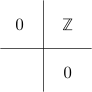

cohomology of the 4-connected cover of S^3
Proposition
Let $F_4$ be the 4-cover of $S^3$. Then its cohomology ring is given by
\begin{align*}
\tilde{H}_*(F_4, \mathbb{Z}) =
\begin{cases}
\mathbb{Z}/k \mathbb{Z} & \mbox{if } * = 2k \\
0 & \mbox{else } \\
\end{cases}
\end{align*}
Proof
consider the fiber sequences n+1-cover of an n-1-connected anima is given by the fiber of an eilenberg maclane space
\begin{align*}
F_4 \rightarrow S^3 \rightarrow K(\mathbb{Z},3) \\
K(\mathbb{Z},2) \rightarrow F_4 \rightarrow S^3 \\
\end{align*}
Now $K(\mathbb{Z},2)$ is known as $\mathbb{C}\mathbb{P}^{\infty}$
